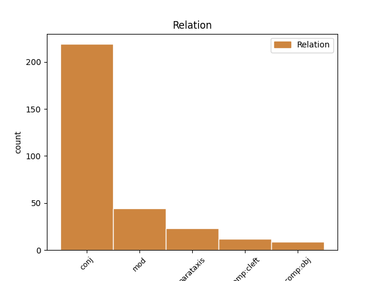
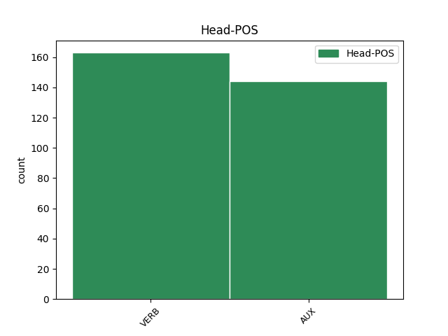
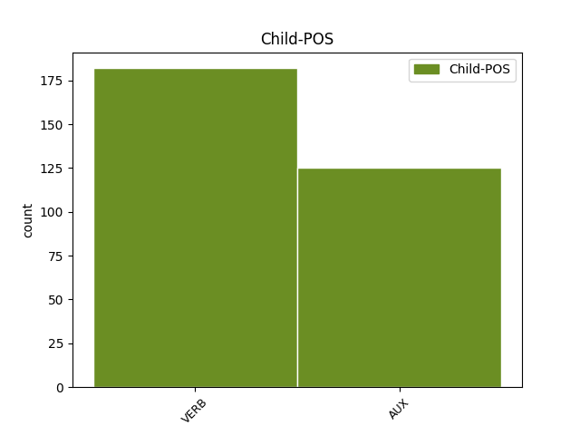

Distribution of features within this leaf



Agreement Rules sorted by frequency.
1 En _ _ _ _ 0 _ _ _
2 juillet _ _ _ _ 0 _ _ _
3 de _ _ _ _ 0 _ _ _
4 l' _ _ _ _ 0 _ _ _
5 année _ _ _ _ 0 _ _ _
6 suivante _ _ _ _ 0 _ _ _
7 , _ _ _ _ 0 _ _ _
8 les _ _ _ _ 0 _ _ _
9 accords _ _ _ _ 0 _ _ _
10 de _ _ _ _ 0 _ _ _
11 Genève _ _ _ _ 0 _ _ _
12 étaient être AUX _ Mood=Ind|Number=Plur|Person=3|Tense=Imp|VerbForm=Fin 0 _ _ _
13 signés _ _ _ _ 0 _ _ _
14 et _ _ _ _ 0 _ _ _
15 l' _ _ _ _ 0 _ _ _
16 Indochine _ _ _ _ 0 _ _ _
17 française _ _ _ _ 0 _ _ _
18 avait avoir AUX _ Mood=Ind|Number=Sing|Person=3|Tense=Imp|VerbForm=Fin 12 conj _ _
19 vécu _ _ _ _ 0 _ _ _
20 . _ _ _ _ 0 _ _ _
Disagree Examples:
1 Les _ _ _ _ 0 _ _ _
2 travaux _ _ _ _ 0 _ _ _
3 de _ _ _ _ 0 _ _ _
4 la _ _ _ _ 0 _ _ _
5 table _ _ _ _ 0 _ _ _
6 ronde _ _ _ _ 0 _ _ _
7 ivoirienne _ _ _ _ 0 _ _ _
8 suivent suivre VERB _ Mood=Ind|Number=Plur|Person=3|Tense=Pres|VerbForm=Fin 0 _ _ _
9 le _ _ _ _ 0 _ _ _
10 calendrier _ _ _ _ 0 _ _ _
11 prévu _ _ _ _ 0 _ _ _
12 et _ _ _ _ 0 _ _ _
13 pourraient pouvoir VERB _ Mood=Cnd|Number=Plur|Person=3|Tense=Pres|VerbForm=Fin 8 conj _ _
14 se _ _ _ _ 0 _ _ _
15 terminer _ _ _ _ 0 _ _ _
16 avant _ _ _ _ 0 _ _ _
17 la _ _ _ _ 0 _ _ _
18 date _ _ _ _ 0 _ _ _
19 butoir _ _ _ _ 0 _ _ _
20 de _ _ _ _ 0 _ _ _
21 le _ _ _ _ 0 _ _ _
22 24 _ _ _ _ 0 _ _ _
23 janvier _ _ _ _ 0 _ _ _
24 , _ _ _ _ 0 _ _ _
25 a _ _ _ _ 0 _ _ _
26 indiqué _ _ _ _ 0 _ _ _
27 le _ _ _ _ 0 _ _ _
28 porte-parole _ _ _ _ 0 _ _ _
29 de _ _ _ _ 0 _ _ _
30 le _ _ _ _ 0 _ _ _
31 Quai _ _ _ _ 0 _ _ _
32 d' _ _ _ _ 0 _ _ _
33 Orsay _ _ _ _ 0 _ _ _
34 . _ _ _ _ 0 _ _ _
1 " _ _ _ _ 0 _ _ _
2 Pour _ _ _ _ 0 _ _ _
3 une _ _ _ _ 0 _ _ _
4 région _ _ _ _ 0 _ _ _
5 comportant _ _ _ _ 0 _ _ _
6 cinq _ _ _ _ 0 _ _ _
7 départements _ _ _ _ 0 _ _ _
8 , _ _ _ _ 0 _ _ _
9 il _ _ _ _ 0 _ _ _
10 pourrait pouvoir VERB _ Mood=Cnd|Number=Sing|Person=3|Tense=Pres|VerbForm=Fin 0 _ _ _
11 y _ _ _ _ 0 _ _ _
12 avoir _ _ _ _ 0 _ _ _
13 3 _ _ _ _ 0 _ _ _
14 x _ _ _ _ 0 _ _ _
15 5 _ _ _ _ 0 _ _ _
16 = _ _ _ _ 0 _ _ _
17 15 _ _ _ _ 0 _ _ _
18 hommes _ _ _ _ 0 _ _ _
19 en _ _ _ _ 0 _ _ _
20 tête _ _ _ _ 0 _ _ _
21 " _ _ _ _ 0 _ _ _
22 , _ _ _ _ 0 _ _ _
23 explique expliquer VERB _ Mood=Ind|Number=Sing|Person=3|Tense=Pres|VerbForm=Fin 10 parataxis _ _
24 Marie-Jo _ _ _ _ 0 _ _ _
25 Zimmermann _ _ _ _ 0 _ _ _
26 . _ _ _ _ 0 _ _ _
1 - _ _ _ _ 0 _ _ _
2 Gardez garder VERB _ Mood=Imp|Number=Plur|Person=2|Tense=Pres|VerbForm=Fin 0 _ _ _
3 cette _ _ _ _ 0 _ _ _
4 notice _ _ _ _ 0 _ _ _
5 , _ _ _ _ 0 _ _ _
6 vous _ _ _ _ 0 _ _ _
7 pourriez pouvoir VERB _ Mood=Cnd|Number=Plur|Person=2|Tense=Pres|VerbForm=Fin 2 mod _ _
8 avoir _ _ _ _ 0 _ _ _
9 besoin _ _ _ _ 0 _ _ _
10 de _ _ _ _ 0 _ _ _
11 la _ _ _ _ 0 _ _ _
12 relire _ _ _ _ 0 _ _ _
13 . _ _ _ _ 0 _ _ _
1 Un _ _ _ _ 0 _ _ _
2 autre _ _ _ _ 0 _ _ _
3 mérite _ _ _ _ 0 _ _ _
4 de _ _ _ _ 0 _ _ _
5 cette _ _ _ _ 0 _ _ _
6 résolution _ _ _ _ 0 _ _ _
7 est _ _ _ _ 0 _ _ _
8 de _ _ _ _ 0 _ _ _
9 considérer _ _ _ _ 0 _ _ _
10 , _ _ _ _ 0 _ _ _
11 de _ _ _ _ 0 _ _ _
12 reconsidérer _ _ _ _ 0 _ _ _
13 , _ _ _ _ 0 _ _ _
14 de _ _ _ _ 0 _ _ _
15 réaffirmer _ _ _ _ 0 _ _ _
16 les _ _ _ _ 0 _ _ _
17 droits _ _ _ _ 0 _ _ _
18 de _ _ _ _ 0 _ _ _
19 l' _ _ _ _ 0 _ _ _
20 homme _ _ _ _ 0 _ _ _
21 en _ _ _ _ 0 _ _ _
22 tant _ _ _ _ 0 _ _ _
23 qu' _ _ _ _ 0 _ _ _
24 élément _ _ _ _ 0 _ _ _
25 central _ _ _ _ 0 _ _ _
26 de _ _ _ _ 0 _ _ _
27 l' _ _ _ _ 0 _ _ _
28 identité _ _ _ _ 0 _ _ _
29 de _ _ _ _ 0 _ _ _
30 l' _ _ _ _ 0 _ _ _
31 Union _ _ _ _ 0 _ _ _
32 européenne _ _ _ _ 0 _ _ _
33 , _ _ _ _ 0 _ _ _
34 une _ _ _ _ 0 _ _ _
35 Union _ _ _ _ 0 _ _ _
36 européenne _ _ _ _ 0 _ _ _
37 qui _ _ _ _ 0 _ _ _
38 soit être AUX _ Mood=Sub|Number=Sing|Person=3|Tense=Pres|VerbForm=Fin 0 _ _ _
39 une _ _ _ _ 0 _ _ _
40 communauté _ _ _ _ 0 _ _ _
41 de _ _ _ _ 0 _ _ _
42 valeurs _ _ _ _ 0 _ _ _
43 et _ _ _ _ 0 _ _ _
44 dans _ _ _ _ 0 _ _ _
45 laquelle _ _ _ _ 0 _ _ _
46 les _ _ _ _ 0 _ _ _
47 droits _ _ _ _ 0 _ _ _
48 de _ _ _ _ 0 _ _ _
49 l' _ _ _ _ 0 _ _ _
50 homme _ _ _ _ 0 _ _ _
51 constituent constituer VERB _ Mood=Ind|Number=Plur|Person=3|Tense=Pres|VerbForm=Fin 38 conj _ _
52 le _ _ _ _ 0 _ _ _
53 centre _ _ _ _ 0 _ _ _
54 de _ _ _ _ 0 _ _ _
55 gravité _ _ _ _ 0 _ _ _
56 de _ _ _ _ 0 _ _ _
57 notre _ _ _ _ 0 _ _ _
58 effort _ _ _ _ 0 _ _ _
59 et _ _ _ _ 0 _ _ _
60 de _ _ _ _ 0 _ _ _
61 notre _ _ _ _ 0 _ _ _
62 raisonnement _ _ _ _ 0 _ _ _
63 . _ _ _ _ 0 _ _ _
1 Quelle _ _ _ _ 0 _ _ _
2 est _ _ _ _ 0 _ _ _
3 sa _ _ _ _ 0 _ _ _
4 réaction _ _ _ _ 0 _ _ _
5 face _ _ _ _ 0 _ _ _
6 à _ _ _ _ 0 _ _ _
7 les _ _ _ _ 0 _ _ _
8 opinions _ _ _ _ 0 _ _ _
9 de _ _ _ _ 0 _ _ _
10 plus _ _ _ _ 0 _ _ _
11 en _ _ _ _ 0 _ _ _
12 plus _ _ _ _ 0 _ _ _
13 nombreuses _ _ _ _ 0 _ _ _
14 et _ _ _ _ 0 _ _ _
15 intenses _ _ _ _ 0 _ _ _
16 , _ _ _ _ 0 _ _ _
17 provenant _ _ _ _ 0 _ _ _
18 par _ _ _ _ 0 _ _ _
19 exemple _ _ _ _ 0 _ _ _
20 de _ _ _ _ 0 _ _ _
21 le _ _ _ _ 0 _ _ _
22 Conseil _ _ _ _ 0 _ _ _
23 ou _ _ _ _ 0 _ _ _
24 encore _ _ _ _ 0 _ _ _
25 de _ _ _ _ 0 _ _ _
26 les _ _ _ _ 0 _ _ _
27 États _ _ _ _ 0 _ _ _
28 membres _ _ _ _ 0 _ _ _
29 , _ _ _ _ 0 _ _ _
30 selon _ _ _ _ 0 _ _ _
31 lesquelles _ _ _ _ 0 _ _ _
32 ces _ _ _ _ 0 _ _ _
33 5,5 _ _ _ _ 0 _ _ _
34 milliards _ _ _ _ 0 _ _ _
35 sont être AUX _ Mood=Ind|Number=Plur|Person=3|Tense=Pres|VerbForm=Fin 0 _ _ _
36 bien _ _ _ _ 0 _ _ _
37 trop _ _ _ _ 0 _ _ _
38 élevés _ _ _ _ 0 _ _ _
39 pour _ _ _ _ 0 _ _ _
40 les _ _ _ _ 0 _ _ _
41 Balkans _ _ _ _ 0 _ _ _
42 occidentaux _ _ _ _ 0 _ _ _
43 , _ _ _ _ 0 _ _ _
44 dans _ _ _ _ 0 _ _ _
45 le _ _ _ _ 0 _ _ _
46 cadre _ _ _ _ 0 _ _ _
47 de _ _ _ _ 0 _ _ _
48 le _ _ _ _ 0 _ _ _
49 soutien _ _ _ _ 0 _ _ _
50 de _ _ _ _ 0 _ _ _
51 pré-adhésion _ _ _ _ 0 _ _ _
52 pour _ _ _ _ 0 _ _ _
53 la _ _ _ _ 0 _ _ _
54 Bulgarie _ _ _ _ 0 _ _ _
55 et _ _ _ _ 0 _ _ _
56 la _ _ _ _ 0 _ _ _
57 Roumanie _ _ _ _ 0 _ _ _
58 , _ _ _ _ 0 _ _ _
59 et _ _ _ _ 0 _ _ _
60 selon _ _ _ _ 0 _ _ _
61 lesquelles _ _ _ _ 0 _ _ _
62 , _ _ _ _ 0 _ _ _
63 comme _ _ _ _ 0 _ _ _
64 il _ _ _ _ 0 _ _ _
65 en _ _ _ _ 0 _ _ _
66 va _ _ _ _ 0 _ _ _
67 par _ _ _ _ 0 _ _ _
68 exemple _ _ _ _ 0 _ _ _
69 de _ _ _ _ 0 _ _ _
70 la _ _ _ _ 0 _ _ _
71 capacité _ _ _ _ 0 _ _ _
72 d' _ _ _ _ 0 _ _ _
73 absorption _ _ _ _ 0 _ _ _
74 , _ _ _ _ 0 _ _ _
75 un _ _ _ _ 0 _ _ _
76 montant _ _ _ _ 0 _ _ _
77 bien _ _ _ _ 0 _ _ _
78 inférieur _ _ _ _ 0 _ _ _
79 pourrait pouvoir VERB _ Mood=Cnd|Number=Sing|Person=3|Tense=Pres|VerbForm=Fin 35 conj _ _
80 être _ _ _ _ 0 _ _ _
81 beaucoup _ _ _ _ 0 _ _ _
82 plus _ _ _ _ 0 _ _ _
83 réaliste _ _ _ _ 0 _ _ _
84 ? _ _ _ _ 0 _ _ _